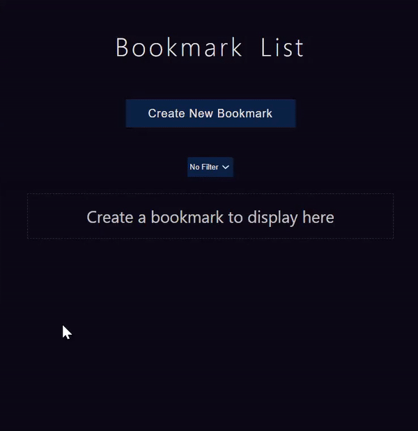

About Me
| HOMETOWN : | Philadelphia, Pennsylvania |
| HOBBIES : | cognition, writing, gaming, bass |
| DEGREE : | Health Education |
| OCCUPATION : | Junior Web Developer |
| EVERY-DAY-CARRY : | gratitude, curiosity, laughter |
I have been self-teaching computer science since 2017, using the myriad web resources available (e.g. FreeCodeCamp, The Odin Project, Launch School, Khan Academy). I began Thinkful's Engineering Immersion in October 2020 to faciliate my learning. I am excited to collaborate with teams in education technology.
Services
-
HTML
-
CSS
-
JAVASCRIPT
-
JQUERY
-
REACT.JS
-
NODE.JS
-
EXPRESS.JS
-
POSTGRESQL
-
PYTHON
-
RUBY
-
C
Email Me
Projects
I track progress of new projects by adding them them to my Github portfolio. Github Pages allows easy access to the production-ready view of each project I create. Here are some of my proudest moments as a junior developer. Click on a project to see more.
Google Homepage:
The Google homepage project is assigned by The Odin Project for learners who want to practice responsive web design. I used HTML and CSS to create an exact replica...can you tell the difference?
Bookmark API:
Favorite websites can be saved all in one place with this Bookmark API. Users can use my app to create, filter, and delete bookmarks. I used JQuery to add some sleek interactivity. Stay tuned for added features!
